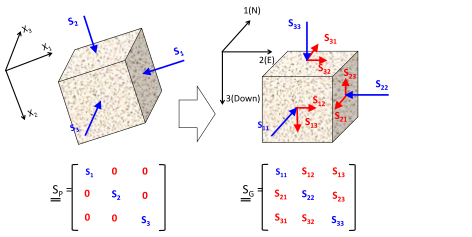

Next: Breakout measurement Up: Shear failure and wellbore Previous: Shear failure and wellbore Contents
For a given set of problem variables (far field stress, pore pressure, and mud pressure), we can calculate the required strength of the rock to have a stable wellbore.
Let us consider the example of Fig. 6.10 that shows the required  to resist shear failure assuming the friction angle is
to resist shear failure assuming the friction angle is
 .
For example, if the rock had a
.
For example, if the rock had a
 MPa, one may expect a
wide breakout.
MPa, one may expect a
wide breakout.
![\includegraphics[scale=0.65]{.././Figures/split/7-6.pdf}](img712.svg) |
Alternatively, you could solve the previous problem analytically.
The procedure consists in setting shear failure at the point in the wellbore at an angle
 from or
from or  .
Hence, at a point on the wellbore wall at
.
Hence, at a point on the wellbore wall at
 :
:
| (6.10) |
Say hoop stress reaches the maximum principal stress anisotropy allowed by the Mohr-Coulomb shear failure criterion (
 ) where the breakout begins (rock about to fail - Fig. 6.11), then
) where the breakout begins (rock about to fail - Fig. 6.11), then
![$\displaystyle \left[ -(P_W - P_p) + (\sigma_{Hmax} + \sigma_{hmin})
- 2(\sigma_{Hmax} - \sigma_{hmin}) \cos (2 \theta_B) \right]
= UCS + q (P_W - P_p)$](img719.svg) |
(6.11) |
which after some algebraic manipulations results in:
The breakout angle is
|  | (6.13) |
The procedure assumes the rock in the breakout (likely already gone) is still resisting hoop stresses and therefore it is not accurate for large breakouts (
 ).
).
You could also calculate the wellbore pressure for a predetermined breakout angle by rearranging Eq. 6.12
 |
(6.14) |
PROBLEM 6.2: Calculate the breakout angle in a vertical wellbore for a mud weight of 10 ppg in a site onshore at 7000 ft of depth where 4300 psi and 6300 psi and with hydrostatic pore pressure.
The rock mechanical properties are  3500 psi,
3500 psi,  0.6, and = 800 psi.
0.6, and = 800 psi.
SOLUTION
The problem variables are the same of problem 6.1.
For a 10 ppg mud, the resulting mud pressure is
 ppg
ppg
Hence, the expected wellbore breakout angle is
![\includegraphics[scale=0.65]{.././Figures/split/7-10.pdf}](img717.svg)
![$\displaystyle 2 \theta_B = \arccos \left[ \frac{ \sigma_{Hmax} + \sigma_{hmin} - UCS - (1+q)(P_W - P_p)}{2(\sigma_{Hmax} - \sigma_{hmin})} \right]$](img720.svg)